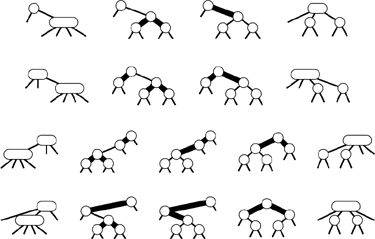

C++ Programming Robert Sedgewick - Princeton University Addison Wesley Professional Algorithms in C++, Parts 1–4: Fundamentals, Data Structure, Sorting, Searching, Third Edition
13.4. Red–Black Trees
The top-down 2-3-4 insertion algorithm described in the previous section is easy to understand, but implementing it directly is cumbersome because of all the different cases that can arise. We need to maintain three different types of nodes, to compare search keys against each of the keys in the nodes, to copy links and other information from one type of node to another, to create and destroy nodes, and so forth. In this section, we examine a simple abstract representation of 2-3-4 trees that leads us to a natural implementation of the symbol-table algorithms with near-optimal worst-case performance guarantees.
The basic idea is to represent 2-3-4 trees as standard BSTs (2-nodes only), but to add one extra bit of information per node to encode 3-nodes and 4-nodes. We think of the links as being of two different types: red links, which bind together small binary trees comprising 3-nodes and 4-nodes, and black links, which bind together the 2-3-4 tree. Specifically, as illustrated in Figure 13.15, we represent 4-nodes as three 2-nodes connected by red links, and 3-nodes as two 2-nodes connected by a single red link. The red link in a 3-node may be a left link or a right link, so there are two ways to represent each 3-node.
The use of two types of links provides us with an efficient way to represent 3-nodes and 4-nodes in 2-3-4 trees. We use red links (thick lines in our diagrams) for internal connections in nodes, and black links (thin lines in our diagrams) for 2-3-4 tree links. A 4-node (top left) is represented by a balanced subtree of three 2-nodes connected by red links (top right). Both have three keys and four black links. A 3-node (bottom left) is represented by one 2-node connected to another (either on the right or the left) with a single red link (bottom right). All have two keys and three black links.
In any tree, each node is pointed to by one link, so coloring the links is equivalent to coloring the nodes. Accordingly, we use one extra bit per node to store the color of the link pointing to that node. We refer to 2-3-4 trees represented in this way as red–black BSTs. The orientation of each 3-node is determined by the dynamics of the algorithm that we shall describe. It would be possible to enforce a rule that 3-nodes all slant the same way, but there is no reason to do so. Figure 13.16 shows an example of a red–black tree. If we eliminate the red links and collapse together the nodes they connect, the result is the 2-3-4 tree in Figure 13.10.
This figure depicts a red–black tree that contains the keys A S R C H I N G E X M P L. We can find a key in such a tree with standard BST search. Any path from the root to an external node in this tree has three black links. If we collapse the nodes connected by red links in this tree, we get the 2-3-4 tree of Figure 13.10.
Red–black trees have two essential properties: (i) the standard search method for BSTs works without modification; and (ii) they correspond directly to 2-3-4 trees, so we can implement the balanced 2-3-4 tree algorithm by maintaining the correspondence. We get the best of both worlds: the simple search method from the standard BST, and the simple insertion–balancing method from the 2-3-4 search tree.
The search method never examines the field that represents node color, so the balancing mechanism adds no overhead to the time taken by the fundamental search procedure. Since each key is inserted just once, but may be searched for many times in a typical application, the end result is that we get improved search times (because the trees are balanced) at relatively little cost (because no work for balancing is done during the searches). Moreover, the overhead for insertion is small: we have to take action for balancing only when we see 4-nodes, and there are not many 4-nodes in the tree because we are always breaking them up. The inner loop of the insert procedure is the code that walks down the tree (the same as for the search or search-and-insert operations in standard BSTs), with one extra test added: If a node has two red children, it is a part of a 4-node. This low overhead is a primary reason for the efficiency of red–black BSTs.
Now, let us consider the red–black representation for the two transformations that we might need to perform when we do encounter a 4-node: If we have a 2-node connected to a 4-node, then we should convert the pair into a 3-node connected to two 2-nodes; if we have a 3-node connected to a 4-node, then we should convert the pair into a 4-node connected to two 2-nodes. When a new node is added at the bottom, we imagine it to be a 4-node that has to be split and its middle node passed up to be inserted into the bottom node where the search ends, which is guaranteed by the top-down process to be either a 2-node or a 3-node. The transformation required when we encounter a 2-node connected to a 4-node is easy, and the same transformation works if we have a 3-node connected to a 4-node in the "right" way, as shown in the first two cases in Figure 13.17.
In a red–black tree, we implement the operation of splitting a 4-node that is not the child of a 4-node by changing the node colors in the three nodes comprising the 4-node, then possibly doing one or two rotations. If the parent is a 2-node (top), or a 3-node that has a convenient orientation (second from top), no rotations are needed. If the 4-node is on the center link of the 3-node (bottom), a double rotation is needed; otherwise, a single rotation suffices (third from top).

We are left with the two other situations that can arise if we encounter a 3-node connected to a 4-node, as shown in the second two cases in Figure 13.17. (There are actually four situations, because the mirror images of these two can also occur for 3-nodes of the other orientation.) In these cases, the naive 4-node split leaves two red links in a row—the tree that results does not represent a 2-3-4 tree in accordance with our conventions. The situation is not too bad, because we do have three nodes connected by red links: all we need to do is to transform the tree such that the red links point down from the same node.
Fortunately, the rotation operations that we have been using are precisely what we need to achieve the desired effect. Let us begin with the easier of the two remaining cases: the third case in Figure 13.17, where a 4-node attached to a 3-node has split, leaving two red links in a row that are oriented the same way. This situation would not have arisen if the 3-node had been oriented the other way: Accordingly, we restructure the tree to switch the orientation of the 3-node, and thus reduce this case to be the same as the second case, where the naive 4-node split was sufficient. Restructuring the tree to reorient a 3-node is a single rotation with the additional requirement that the colors of the two nodes have to be switched.
Program 13.6. Insertion in red–black BSTs|
This function implements insertion in 2-3-4 trees using the red–black representation. We add a color bit red to the type node (and extend its constructor accordingly), with 1 signifying that the node is red, and 0 signifying that it is black. On the way down the tree (before the recursive call), we check for 4-nodes, and split them by flipping the color bits in all three nodes. When we reach the bottom, we create a new red node for the item to be inserted and return a pointer to it. On the way up the tree (after the recursive call), we check whether a rotation is needed. If the search path has two red links with the same orientation, we do a single rotation from the top node, then flip the color bits to make a proper 4-node. If the search path has two red links with different orientations, we do a single rotation from the bottom node, reducing to the other case for the next step up.
private:
int red(link x)
{ if (x == 0) return 0; return x->red; }
void RBinsert(link& h, Item x, int sw)
{
if (h == 0) { h = new node(x); return; }
if (red(h->l) && red(h->r))
{ h->red = 1; h->l->red = 0; h->r->red = 0; }
if (x.key() < h->item.key())
{
RBinsert(h->l, x, 0);
if (red(h) && red(h->l) && sw) rotR(h);
if (red(h->l) && red(h->l->l))
{ rotR(h); h->red = 0; h->r->red = 1; }
}
else
{
RBinsert(h->r, x, 1);
if (red(h) && red(h->r) && !sw) rotL(h);
if (red(h->r) && red(h->r->r))
{ rotL(h); h->red = 0; h->l->red = 1; }
}
}
public:
void insert(Item x)
{ RBinsert(head, x, 0); head->red = 0; }
|
Finally, to handle the case where a 4-node attached to a 3-node has split leaving two red links in a row that are oriented differently, we rotate to reduce immediately to the case where the links are oriented the same way, which we then handle as before. This transformation amounts to the same operations as the left-right and right-left double rotations that we used for splay BSTs in Section 13.2, although we have to do slightly more work to maintain the colors properly. Figures 13.18 and 13.19 depict examples of red–black insertion operations.
This figure depicts the result (bottom) of inserting a record with key I into the sample red–black tree at the top. In this case, the insertion process consists of splitting the 4-node at C with a color flip (center), then adding the new node at the bottom, converting the node containing H from a 2-node to a 3-node.
This figure depicts the result (bottom) of inserting a record with key G into the red–black tree at the top. In this case, the insertion process consists of splitting the 4-node at I with a color flip (second from top), then adding the new node at the bottom (third from top), then (returning to each node on the search path in the code after the recursive function calls) doing a left rotation at C and a right rotation at R to finish the process of splitting the 4-node.
Program 13.6 is an implementation of insert for red–black trees that performs the transformations that are summarized in Figure 13.17. The recursive implementation makes it possible to perform the color flips for 4-nodes on the way down the tree (before the recursive calls), then to perform rotations on the way up the tree (after the recursive calls). This program would be difficult to understand without the two layers of abstraction that we have developed to implement it. We can check that the recursive trickery implements the rotations depicted in Figure 13.17; then, we can check that the program implements our high-level algorithm on 2-3-4 trees—break up 4-nodes on the way down the tree, then insert the new item into the 2- or 3-node where the search path ends at the bottom of the tree.
Figure 13.20 (which we can think of as a more detailed version of Figure 13.13) shows how Program 13.6 constructs the red–black trees that represent balanced 2-3-4 trees as a sample set of keys is inserted. Figure 13.21 shows a tree built from the larger example that we have been using; the average number of nodes visited during a search for a random key in this tree is just 5.81, as compared to 7.00 for the tree built from the same keys in Chapter 12, and to 5.74, the best possible for a perfectly balanced tree. At a cost of only a few rotations, we get a tree that has far better balance than any of the others that we have seen in this chapter for the same keys. Program 13.6 is an efficient, relatively compact algorithm for insertion using a binary tree structure that is guaranteed to take a logarithmic number of steps for all searches and insertions. It is one of the few symbol-table implementations with that property, and its use is justified in a library implementation where properties of the key sequence to be processed cannot be characterized accurately.
This sequence depicts the result of inserting records with keys A S E R C H I N G X into an initially empty red–black tree.
This red–black BST is the result of inserting 200 randomly ordered keys into an initially empty tree. All search misses in the tree use between six and 12 comparisons.
Property 13.8. A search in a red–black tree with N nodes requires fewer than 2lg N + 2 comparisons|
Only splits that correspond to a 3-node connected to a 4-node in a 2-3-4 tree require a rotation in the red–black tree, so this property follows from Property 13.2. The worst case is when the path to the insertion point consists of alternating 3- and 4-nodes.
|
Moreover, Program 13.6 incurs little overhead for balancing, and the trees that it produces are nearly optimal, so it is also attractive to consider as a fast general-purpose searching method.
Property 13.9. A searchinared–blacktree with N nodes built from random keys uses about 1.002 lg N comparisons, on the average|
The constant 1.002, which has been confirmed through partial analyses and simulations (see reference section) is sufficiently low that we can regard red–black trees as optimal for practical purposes, but the question of whether red–black trees are truly asymptotically optimal is still open. Is the constant equal to 1?
|
Because the recursive implementation in Program 13.6 does some work before the recursive calls and some work after the recursive calls, it makes some modifications to the tree on the way down the search path and some modifications to the tree on the way back up. Therefore, it does not have the property that the balancing is accomplished in one top-down pass. This fact is of little consequence for most applications because the depth of the recursion is guaranteed to be low. For some applications that involve multiple independent processes with access to the same tree, we might need a nonrecursive implementation that actively operates on only a constant number of nodes at any given time (see Exercise 13.66).
For an application that carries other information in the trees, the rotation operation might be an expensive one, perhaps causing us to update information in all the nodes in the subtrees involved in the rotation. For such an application, we can ensure that each insertion involves at most one rotation by using red–black trees to implement the bottom-up 2-3-4 search trees that are described at the end of Section 13.3. An insertion in those trees involves splitting 4-nodes along the search path, which involves color changes but no rotations in the red–black representation, followed by one single or double rotation (one of the cases in Figure 13.17) when the first 2-node or a 3-node is encountered on the way up the search path (see Exercise 13.59).
If duplicate keys are to be maintained in the tree, then, as we did with splay BSTs, we must allow items with keys equal to a given node to fall on both sides of that node. Otherwise, severe imbalance could result from long strings of duplicate keys. Again, this observation tells us that finding all items with a given key requires specialized code.
As mentioned at the end of Section 13.3, red–black representations of 2-3-4 trees are among several similar strategies that have been proposed for implementing balanced binary trees (see reference section). As we saw, it is the rotate operations that balance the trees: We have been looking at a particular view of the trees that makes it easy to decide when to rotate. Other views of the trees lead to other algorithms, a few of which we shall mention briefly here.
The oldest and most well-known data structure for balanced trees is the height-balanced, or AVL, tree, discovered in 1962 by Adel'sonVel'skii and Landis. These trees have the property that the heights of the two subtrees of each node differ by at most 1. If an insertion causes one of the subtrees of some node to grow in height by 1, then the balance condition might be violated. However, one single or double rotation will bring the node back into balance in every case. The algorithm that is based on this observation is similar to the method of balancing 2-3-4 trees from the bottom up: Do a recursive search for the node, then, after the recursive call, check for imbalance and do a single or double rotation to correct it if necessary (see Exercise 13.61). The decision about which rotations (if any) to perform requires that we know whether each node has a height that is 1 less than, the same as, or 1 greater than the height of its sibling. Two bits per node are needed to encode this information in a straightforward way, although it is possible to get by without using any extra storage, using the red–black abstraction (see Exercises 13.62 and 13.65).
Because 4-nodes play no special role in the bottom-up 2-3-4 algorithm, it is possible to build balanced trees in essentially the same way, but using only 2-nodes and 3-nodes. Trees built in this way are called2-3 trees, and were discovered by Hopcroft in 1970. There is not enough flexibility in 2-3 trees to give a convenient top-down insertion algorithm. Again, the red–black framework can simplify the implementation, but bottom-up 2-3 trees offer no particular advantage over bottom-up 2-3-4 trees, because single and double rotations are still needed to maintain balance. Bottom-up 2-3-4 trees have slightly better balance and have the advantage of using at most one rotation per insertion.
In Chapter 16, we shall study another important type of balanced tree, an extension of 2-3-4 trees called B-trees. B-trees allow up to M keys per node for large M, and are widely used for search applications that involve huge files.
We have defined red–black trees by correspondence to 2-3-4 trees. It is also amusing to formulate direct structural definitions.
Definition 13.3. A red–black BST is a binary search tree in which each node is marked to be either redor black, with the additional restriction that no two red nodes appear consecutively on any path from an external link to the root
Definition 13.4. A balanced red–black BST is a red–black BST in which all paths from external links to the root have the same number of black nodes|
Now, an alternative approach to developing a balanced tree algorithm is to ignore the 2-3-4 tree abstraction entirely and formulate an insertion algorithm that preserves the defining property of balanced red–black BSTs through rotations. For example, using the bottom-up algorithm corresponds to attaching the new node at the bottom of the search path with a red link, then proceeding up the search path, doing rotations or color changes, as per the cases in Figure 13.17, to break up any pair of consecutive red links encountered on the path. The fundamental operations that we perform are the same as in Program 13.6 and its bottom-up counterpart, but subtle differences arise, because 3-nodes can orient either way, operations can be performed in different orders, and various different rotation decisions can be used successfully.
Let us summarize: Using red–black trees to implement balanced 2-3-4 trees, we can develop a symbol table where a search operation for a key in a file of, say, 1 million items can be completed by comparing that key with about 20 other keys. In the worst case, no more than 40 comparisons are needed. Furthermore, little overhead is associated with each comparison, so a fast search is ensured, even in a huge file.
|
Exercises |  13.48 Draw the red–black BST that results when you insert items with the keys E A S Y Q U T I O N in that order into an initially empty tree, using the top-down insertion method. 13.48 Draw the red–black BST that results when you insert items with the keys E A S Y Q U T I O N in that order into an initially empty tree, using the top-down insertion method.
| | 13.49 Draw the red–black BST that results when you insert items with the keys E A S Y Q U T I O N in that order into an initially empty tree, using the bottom-up insertion method. | |  13.50 Draw the red–black tree that results when you insert letters A through K in order into an initially empty tree, then describe what happens in general when trees are built by insertion of keys in ascending order. 13.50 Draw the red–black tree that results when you insert letters A through K in order into an initially empty tree, then describe what happens in general when trees are built by insertion of keys in ascending order.
| | 13.51 Give a sequence of insertions that will construct the red–black tree shown in Figure 13.16. | | 13.52 Generate two random 32-node red–black trees. Draw them (either by hand or with a program). Compare them with the (unbalanced) BSTs built with the same keys. | | 13.53 How many different red–black trees correspond to a 2-3-4 tree that has t 3-nodes? | | 13.54 Draw all the structurally different red–black search trees with N keys for 2  N 12. N 12. | |  13.55 Find the probabilities that each of the trees in Exercise 13.43 is the result of inserting N random distinct elements into an initially empty tree. 13.55 Find the probabilities that each of the trees in Exercise 13.43 is the result of inserting N random distinct elements into an initially empty tree.
| | 13.56 Make a table showing the number of trees for each N from Exercise 13.54 that are isomorphic, in the sense that they can be transformed to one another by exchanges of subtrees in nodes. | |  13.57 Show that, in the worst case, almost all the paths from the root to an external node in a red–black tree of N nodes are of length 2 lg N. 13.57 Show that, in the worst case, almost all the paths from the root to an external node in a red–black tree of N nodes are of length 2 lg N.
| | | | 13.58 How many rotations are required for an insertion into a red–black tree of N nodes, in the worst case? | | 13.59 Implement construct, search, and insert for symbol tables with bottom-up balanced 2-3-4 trees as the underlying data structure, using the red–black representation and the same recursive approach as Program 13.6. Hint: Your code can be similar to Program 13.6, but should perform the operations in a different order. | | 13.60 Implement construct, search, and insert for symbol tables with bottom-up balanced 2-3 trees as the underlying data structure, using the red–black representation and the same recursive approach as Program 13.6. | | 13.61 Implement construct, search, and insert for symbol tables with height-balanced (AVL) trees as the underlying data structure, using the same recursive approach as Program 13.6. | | 13.62 Modify your implementation from Exercise 13.61 to use red–black trees (1 bit per node) to encode the balance information. | | 13.63 Implement balanced 2-3-4 trees using a red–black tree representation in which 3-nodes always lean to the right. Note: This change allows you to remove one of the bit tests from the inner loop for insert. | | 13.64 Program 13.6 does rotations to keep 4-nodes balanced. Develop an implementation for balanced 2-3-4 trees using a red–black tree representation where 4-nodes can be represented as any three nodes connected by two red links (perfectly balanced or not). | | 13.65 Implement construct, search, and insert for red–black trees without using any extra storage for the color bit, based on the following trick. To color a node red, swap its two links. Then, to test whether a node is red, test whether its left child is larger than its right child. You have to modify the comparisons to accommodate the possible pointer swap, and this trick replaces bit comparisons with key comparisons that are presumably more expensive, but it shows that the bit in the nodes can be eliminated, if necessary. | | 13.66 Implement a nonrecursive red–black BST insert function (see Program 13.6) that corresponds to balanced 2-3-4 tree insertion with one top-down pass. Hint: Maintain links gg, g, and p that point, respectively, to the current node's great-grandparent, grandparent, and parent in the tree. All these links might be needed for double rotation. | | 13.67 Write a program that computes the percentage of black nodes in a given red–black BST. Test your program by inserting, N random keys into an initially empty tree, for N = 103, 104, 105, and 106. | | 13.68 Write a program that computes the percentage of items that are in 3-nodes and 4-nodes in a given 2-3-4 search tree. Test your program by inserting N random keys into an initially empty tree, for N = 103, 104, 105, and 106. | | | |
13.69 With 1 bit per node for color, we can represent 2-, 3-, and 4-nodes. How many bits per node would we need to represent 5-, 6-, 7-, and 8-nodes with a binary tree? | | 13.70 Run empirical studies to compute the average and standard deviation of the number of comparisons used for search hits and for search misses in a red–black tree built by insertion of N random keys into an initially empty tree, for N = 103, 104, 105, and 106. | | 13.71 Instrument your program for Exercise 13.70 to compute the number of rotations and node splits that are used to build the trees. Discuss the results. | | 13.72 Use your driver program from Exercise 12.30 to compare the self-organizing–search aspect of splay BSTs with the worst-case guarantees of red–black BSTs and with standard BSTs for the search query distributions defined in Exercises 12.31 and 12.32 (see Exercise 13.29). | | 13.73 Implement a search function for red–black trees that performs rotations and changes node colors on the way down the tree to ensure that the node at the bottom of the search path is not a 2-node. | | 13.74 Use your solution to Exercise 13.73 to implement a remove function for red–black trees. Find the node to be deleted, continue the search to a 3-node or 4-node at the bottom of the path, and move the successor from the bottom to replace the deleted node. |
|